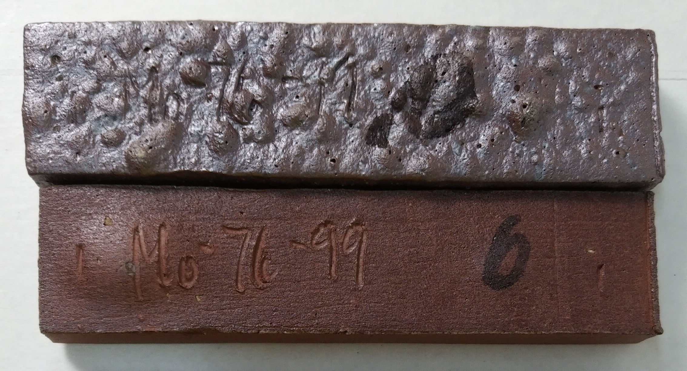

Over Firing of Ceramic Glazes and Bodies
Overfiring can happen with glaze, engobes or clay bodies. The problem is more subtle than you might think.
Details
This can happen with bodies, engobes or glazes. It can be more subtle than you think. Each type of ceramic is either designed to work at a temperature or simply has been because tradition has proven its suitability there. For clay bodies, that temperature may or may not be where it vitrifies. With glazes it is where the glaze is melting to the degree needed to get the physical or aesthetic properties desired. Engobes are delicate and need to be designed with thermal expansion and firing shrinkage compatible with the underlying body, the needed properties generally exhibit within a narrow temperature range.
Related Information
Some bodies cannot be fired to even near zero porosity

This picture has its own page with more detail, click here to see it.
Bloating in a high iron raw clay ground to 42 mesh (Plainsman M2). It is still stable, dense and apparently strong at cone 4 (having 1.1% porosity). But at cone 6 (top bar) it is bloating badly. At cone 5 the clay experiences the early stages of bloating. Cone 4 is thus "dangerous territory" for this particular clay. A reminder of this can be seen by putting on a transparent glaze - it fills with clouds of micro-bubbles from off-gassing that has begun well below cone 4.
Terra cotta gets brittle when over fired

This picture has its own page with more detail, click here to see it.
An excellent example that demonstrates the brittleness typical of vitrified terra cotta bodies. This bowl was fired to cone 02 and rung like a tuning fork when struck with a spoon. The body is dense like a porcelain and at appeared to be incredibly strong (this body is much more vitreous than an average terra cotta would be). However after a few more taps with the spoon it broke in two! It is brittle! Very hard, but brittle. At first I thought it might be that the glaze is under compression, but when I dropped the halves they did not shatter in the manner characteristic of compressed glaze, and they broke with razor sharp edges (like a vitrified porcelain does). So firing for this body must stop short of the most dense matrix possible to avoid this brittleness.
Is the V.C. 71 pottery glaze a true matte?

This picture has its own page with more detail, click here to see it.
The top glaze is V.C. 71, a popular matte cone 6 glaze used by potters. Bottom is G2934 matte, a public domain recipe produced by Plainsman Clays. The latter is a high-MgO matte, it melts well and does not cutlery mark or stain easily. As evidence that it is a true matte, notice that it is still matte when fired to cone 7 or 8. V.C. 71, while having a similar pleasant silky matte surface at cone 6, converts to a glossy if fired higher. This suggests that the cone 6 matteness is due to incomplete melting. For the same reason, it is whiter in color (as soon as it begins to melt and have depth the color darkens).
This is when you should program a firing yourself

This picture has its own page with more detail, click here to see it.
This is Polar Ice cone 6 porcelain that has been over fired. The electric kiln was set to do its standard cone 6 fast fire schedule, but a cone in the kiln demonstrates that it fired much higher (perhaps to cone 7 judging by the bend on the cone). This is a translucent frit-fluxed porcelain that demands accurate firing, the over fire has produced tiny bubbles and surface dimples in the glaze. The mug rim has also warped to oval shape. The lesson: If you are firing ware that is sensitive to schedule or temperature, use large cones and adjust if needed. If it fires too hot like this, then program to fire to cone 5 with a longer soak, or cone 5.5 (if possible). Or, program all the steps yourself; that is definitely our preference.
Why is the clay blistering on this figurine?

This picture has its own page with more detail, click here to see it.
This is an admirable first effort by a budding artist. They used a built-in cone 6 program on an electronic controller equipped electric kiln. But it is overfired. How do we know that? To the right are fired test bars of this clay, they go from cone 4 (top) to cone 8 (bottom). The data sheet of this clay warns not to fire over cone 6. Why? Notice the cone 7 bar has turned to a solid grey and started blistering and the cone 8 one is blistering much more. That cone 8 bar is the same color as the figurine (although the colors do not match on the photo). The solution: Calibrate the kiln sitter by using a self-supporting cone.
An example of extreme overfiring of a clay body

This picture has its own page with more detail, click here to see it.
The lower bar is already bloating at cone 6. The upper one was fired to cone 10 reduction.
 PayPal | No tracking, No ads, No paywall, No transient content! Just organized, concise information constantly updated and improved. Was this helpful? Consider supporting me. |
| By Tony Hansen Follow me on        |  |
Got a Question?
Buy me a coffee and we can talk 

https://digitalfire.com, All Rights Reserved
Privacy Policy